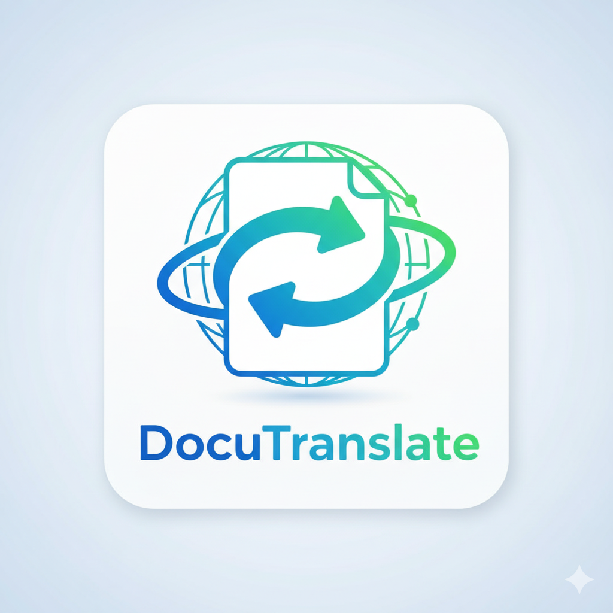

DocuTranslateTraduction de documents Google Docs
Option A : Lien Google Docs
Option B : Fichier de la tablette/PC
🌍 La traduction apparaîtra ici
Entrez une URL Google Docs et cliquez sur "Traduire"
💡 Astuces :
⚠️ API MyMemory : Limite de 10 000 mots/jour
Pour un usage intensif professionnel, utilisez l'API DeepL (payante mais illimitée)